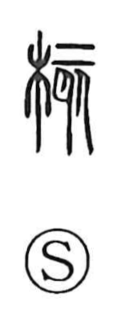

核

Uncategorized
Kun: | On: kaku
kernel ・ core ・ nucleus
Explanation
A phono-semantic character: the left component 木 situates the meaning in the realm of trees and fruit, while 亥 functions as the phonetic. In ancient forms 亥 depicts the skeletal frame of an animal, suggesting hardness; drawing on this sense and sound (akin to 骼, “frame, skeleton”), it gives 核 the notion of a firm interior. The character’s original meaning is the seed or kernel of a fruit—the hard center—and by extension it denotes the central core or heart of things, something solid and not easily displaced.